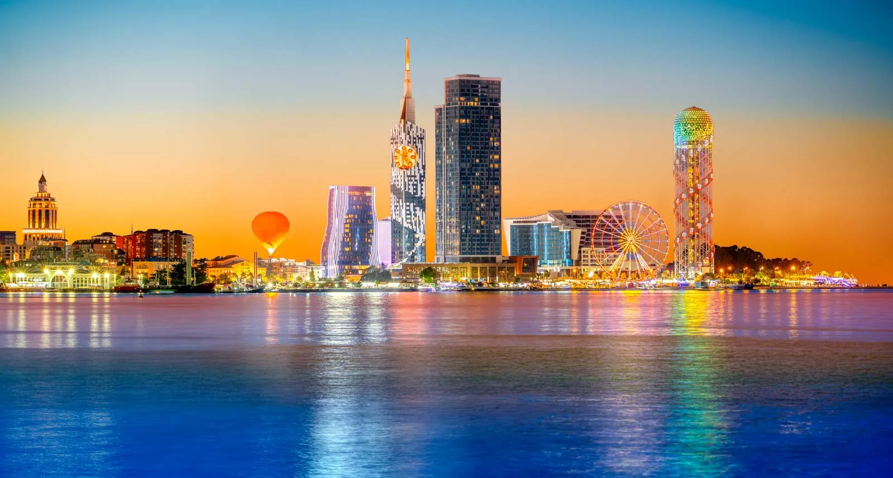
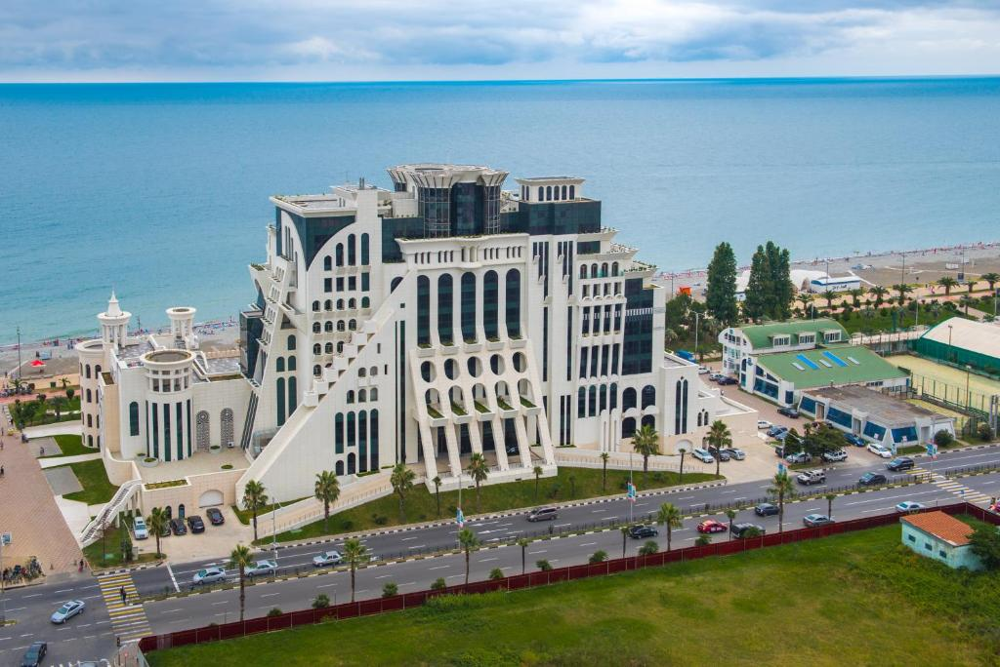
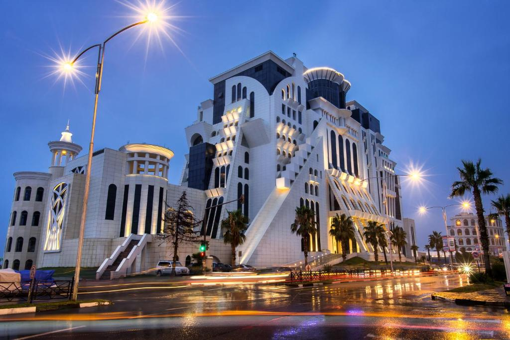
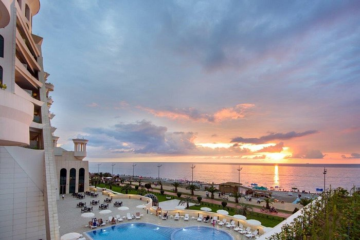
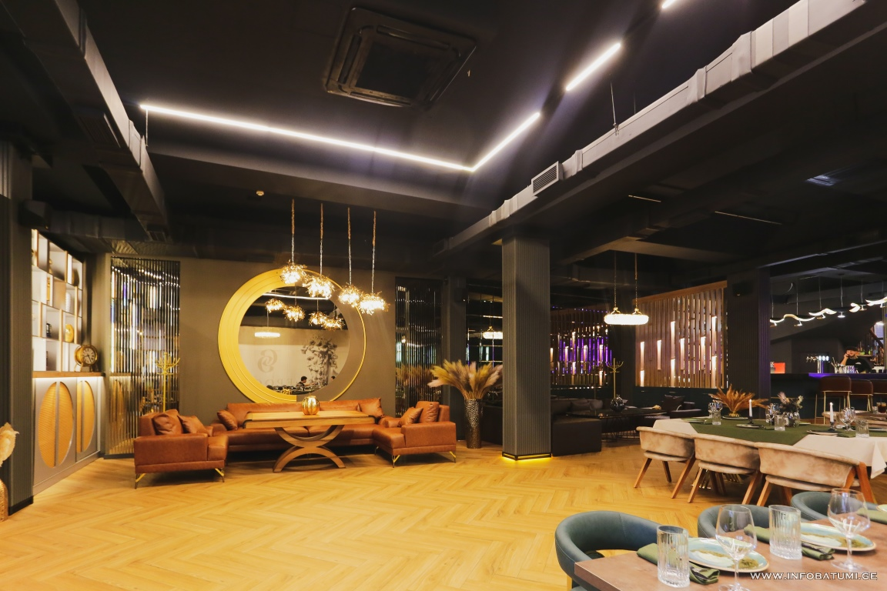
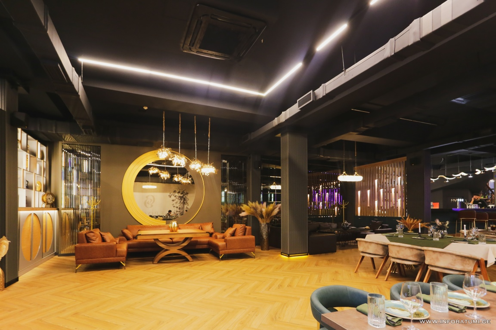

About Adjara
Adjara is a region located in southwestern Georgia, known for its unique combination of sea and mountains, diverse culture, and hospitable people. You will find seaside cities, traditional villages, and stunning natural views. It is a place where modern urban life and folk traditions coexist in harmony.
Photo Gallery

Places to Visit
Batumi
A beautiful seaside city with modern architecture. One of the most popular tourist destinations in Georgia, known for its diverse buildings, charming beachfront, and vibrant cultural life.
Mtirala Mountain
Mtirala Mountain is a unique natural area in Adjara, known for its misty climate and refreshing coolness. The entire area is covered with beautiful forests and a rich ecosystem. It is especially loved by visitors who enjoy peaceful walks, fresh air, and quiet time in nature.

Goderdzi Pass
Goderdzi Pass is located on the border of Adjara and Samtskhe-Javakheti, at an altitude of about 2000 meters. The area is known for its fresh air, highland nature, and cold winters. In summer, you will find green fields and cool mountain weather, while in winter the pass becomes popular for winter sports, especially snowboarding and skiing. The place attracts tourists and nature lovers who seek peace and scenic views.

Hotels & Restaurants
Grand Gloria
Beautiful sea views, delicious food, and good prices. A must-visit place — one of the best hotels in Adjara for maximum comfort and enjoyment.
  Epoqa
Authentic Georgian and Adjarian flavors in a pleasant setting. Everything you need in one place.
 
